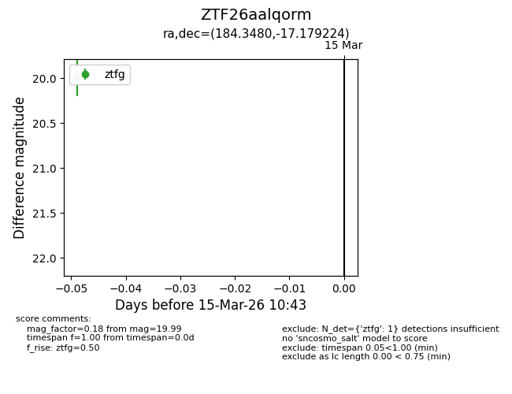
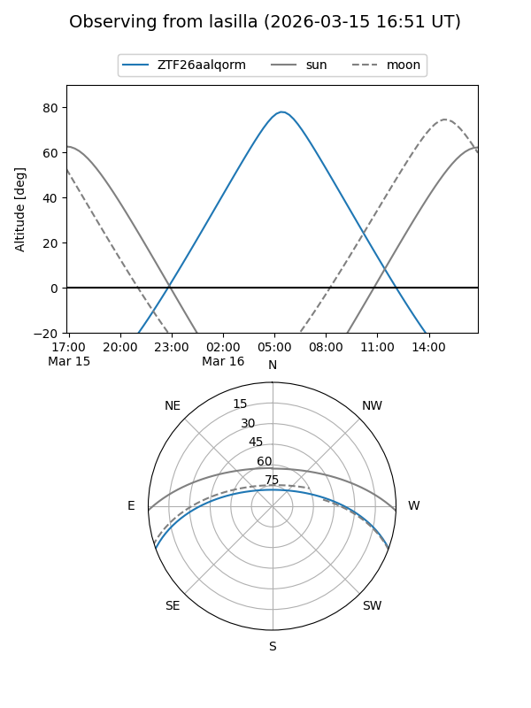
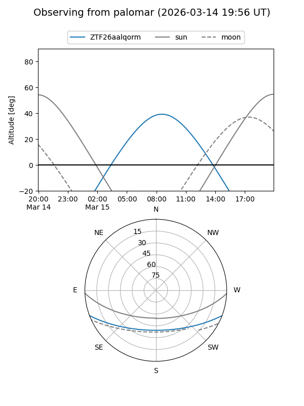

ZTF26aalqorm
Target ZTF26aalqorm at 2026-03-15 10:45
Aliases and brokers:
FINK: link
Lasair: link
ALeRCE: link
alt names
ZTF26aalqorm (ztf,fink_ztf)
Coordinates:
equatorial (ra, dec) = 184.3480,-17.17922
equatorial (HMS+DMS) = 12:17:23.51,-17:10:45.21
galactic (l, b) = (291.4107,+44.92954)
Flags:
Photometry:
last ztfg=19.99
1 ztfg detections
Lightcurve

Visibility


Additional plots